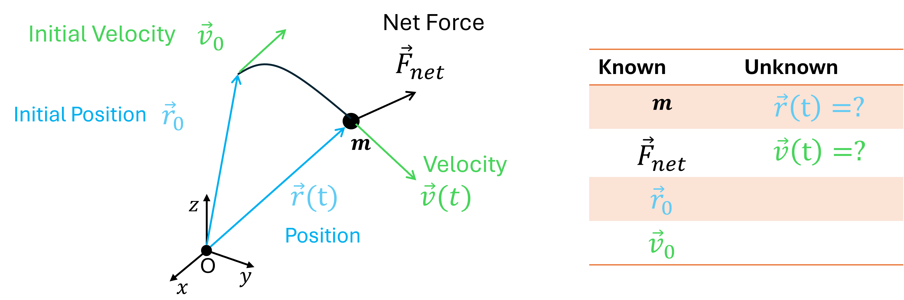
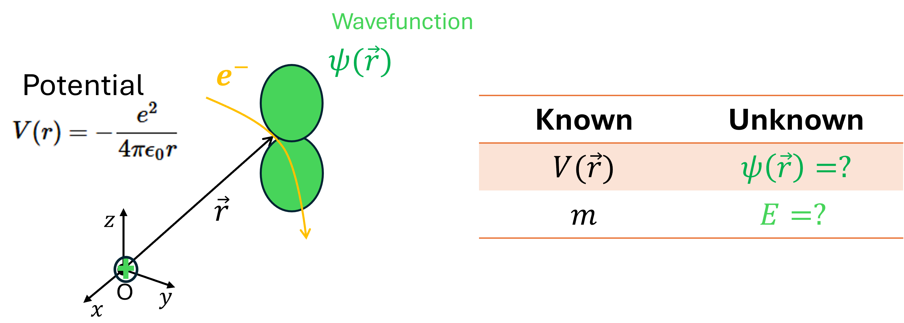

PHYS 3260 Lecture Notes
Mathematical Methods in the Physical Sciences
Why These Methods Matter
Mathematics is the language of physics. From Newton's laws to Schrödinger's equation, every major physical theory is stated mathematically, and a physical idea is only as sharp as the mathematics used to express it. The methods in these notes are not a detour on the way to physics; they are how physics is done.
Rather than meet those methods one at a time and wonder where each is going, it helps to see the destination first. The three areas below are ones you already know something about. Each raises a mathematical question, and each question is answered by a chapter of these notes. The same handful of tools keeps reappearing: series to approximate, linear algebra to handle many coupled quantities at once, and differential equations to describe change.
Mechanics begins with Newton's second law, which is a second-order ordinary differential equation:
Solving it for a given force is the central problem of the subject.

Where this is developed:
Ordinary Differential Equations (Ch. 8): first- and second-order equations
Linear Algebra (Ch. 3): systems of equations, eigenvalue problems, normal modes
Infinite Series and Power Series (Ch. 1): approximating motion when no exact solution exists
Applications: oscillators, planetary motion, variational principles
Maxwell's equations describe how electric and magnetic fields behave in materials:
They are written in the language of vector calculus, so learning that language is a prerequisite for reading them at all.

Where this is developed:
Vector Analysis (Ch. 6): gradient, divergence, curl; Gauss's and Stokes's theorems
Partial Differential Equations (Ch. 10): Laplace's, Poisson's, and wave equations
Fourier Series and Transforms (Ch. 7): solving boundary value problems for fields
Multiple Integrals (Ch. 5): charge and current distributions in space
Applications: fields in dielectrics, waveguides, AC circuits
Quantum mechanics describes a particle by a wavefunction, which evolves according to the Schrödinger equation:
Note that the equation is complex, and that it is again a partial differential equation: two of the threads running through these notes meet here.

Where this is developed:
Complex Numbers (Ch. 2): Euler's formula, complex amplitudes
Linear Algebra (Ch. 3): operators, eigenvalues, Hilbert space
Fourier Series and Transforms (Ch. 7): analysing wavefunctions in different bases
Partial Differential Equations (Ch. 10): time-dependent and time-independent Schrödinger equations
Series Solutions (Ch. 9): special functions such as Legendre and Bessel
Applications: atomic structure, tunnelling, the harmonic oscillator
Read across the three boxes and the pattern is hard to miss: the same few chapters keep being called on. That is the argument for studying these methods together rather than picking them up piecemeal. When a technique appears later in the notes and its purpose is not obvious, it is worth returning to this page to see which physical question it was meant to answer.
Preface
About These Notes
Mathematics is the language through which we learn to understand nature. By mastering this language, we become able to describe physical systems, construct models, make predictions, and, in many cases, guide or control their behavior. For this reason, mathematical methods are not only technical tools; they are an essential part of how physicists think about the physical world.
These lecture notes were developed for PHYS 3260: Mathematical Physics at Kennesaw State University. The purpose of the course is to introduce some of the most important mathematical methods used in physics, while keeping physical meaning at the center of the discussion. The goal is not simply to learn formulas, but to understand why a method is useful, when it should be applied, and what it tells us about a physical system. Although the course is intended primarily for physics students, many of these methods are also useful for students in engineering and other quantitative fields.
We begin with infinite series, power series, and Taylor expansions because approximation is one of the central ideas of physical modeling. Exact solutions are often unavailable, and series provide a systematic way to represent complicated functions in forms that are easier to analyze and use. The course then turns to complex numbers, which are indispensable in many areas of physics. In some subjects, such as quantum mechanics, they are part of the structure of the theory itself; in others, they provide a natural and elegant way to describe oscillations, waves, and exponential behavior, and they often simplify the solution of differential equations.
Linear algebra follows naturally, since many physical problems are expressed in terms of vectors, matrices, and linear transformations. A solid understanding of these ideas is essential for topics such as coupled systems, normal modes, and quantum mechanics. From there, the course moves to functions of several variables. Partial differentiation and multiple integration provide the tools needed to describe systems that depend on more than one variable, while coordinate transformations and Jacobians help us move between different mathematical descriptions of the same physical problem.
Vector analysis then builds the language of fields. Concepts such as gradient, divergence, and curl are central to electromagnetism, fluid flow, and many other parts of physics. The integral theorems of vector calculus show how local properties and global behavior are connected, giving mathematical structure to important physical laws.
The later chapters focus on methods for solving physical problems. Fourier series and Fourier transforms allow functions to be decomposed into simpler modes, an idea that is fundamental in wave motion, signal analysis, heat flow, and quantum theory. Ordinary differential equations describe how systems evolve and respond to external influences. Series solutions and special functions arise when these equations cannot be solved in elementary form, while partial differential equations bring together many of the main ideas of the course in the study of waves, potentials, diffusion, and boundary-value problems.
The organization and style of these notes are inspired by Mary L. Boas’s Mathematical Methods in the Physical Sciences. Like that text, these notes aim to be practical, clear, and closely connected to applications. Many examples are drawn from physics, and one of my future goals is to include more physical examples throughout the notes. I hope this text serves not only as a guide for this course, but also as a useful reference for later study. Mathematical methods become powerful through practice, patience, and repeated connection to real problems, and these notes are meant to support that process.
Erfan Saydanzad Department of Physics Kennesaw State University